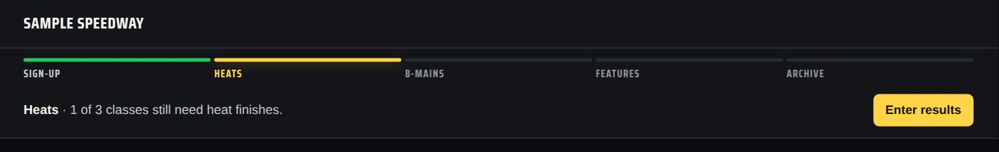
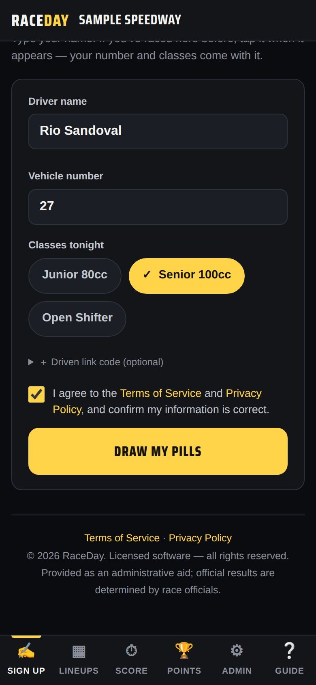
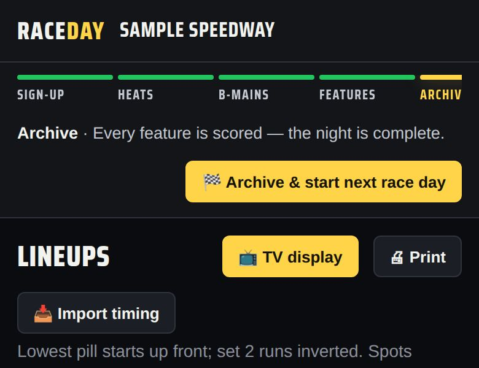

-
Follow the Race Control bar
The bar runs Sign-up → Heats → B-mains → Features → Archive. It tells you what's left — like “2 of 3 classes still need heat finishes” — and its button takes you there: Open sign-up, Enter results, and finally 🏁 Archive & start next race day.

The Race Control bar during heats -
Sign drivers in
On the Sign up tab, drivers enter a name and number, tap their classes, and tap Draw my pills. Returning drivers just tap their name. See The sign-up table.

Sign up -
Check the lineups
The Lineups tab builds every grid as drivers draw — lowest pill on pole, set 2 inverted. Pick a class, switch between Double file and Single file, tap any driver for their card, put it on a screen with 📺 TV display, or 🖨 Print it for the pits.

Lineups -
Score the heats
On the Score tab, pick a class and tap cars in the order they finish. A ✅ on a class tab means it's done. See The scoring tower for number-pad and dropdown entry, and DNF/DNS/DQ.

Score — tap in finishing order -
Run the B-mains (if any)
Classes with more drivers than fit in the feature get B-mains automatically once the heats are scored. They show up on Lineups and Score, and the Race Control bar counts them down. See B-mains.

A B-main lineup -
Run the features
The feature lineup builds itself from heat totals (low wins) plus B-main transfers — it's on the Lineups tab under 🏁 Feature lineup. Score it on the Score tab just like a heat.

Feature lineup -
Make results official
When the race director signs off, tap Mark official. 🔒 Lock results stops accidental changes, and 💾 Save version keeps a snapshot you can roll back to.

Results status buttons -
Watch the points update
The Points tab updates live as feature finishes go in. Leave Today counts toward the points series ticked on the Score tab for a points night. See Season points.

Points -
Archive the night
When every feature is scored the bar says “the night is complete.” Tap 🏁 Archive & start next race day — see End of the night.

Ready to archive
Good to know
- Tapped the wrong car? Tap it again to clear it, or use ↶ Undo.
- Need to move a driver to another class or fix a number mid-night? Admin → Today's entries.
- Lineups and results keep working if the internet drops.
Next guides
Still stuck? The Field Manual walks through every screen, and the FAQ covers common questions. Or just ask.
Email a question →